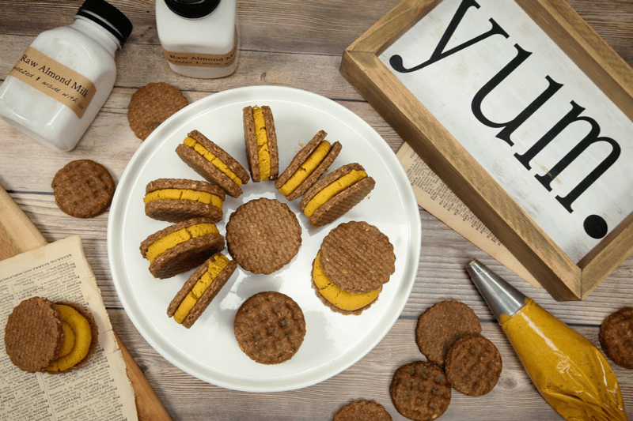
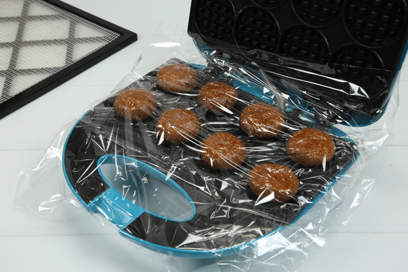
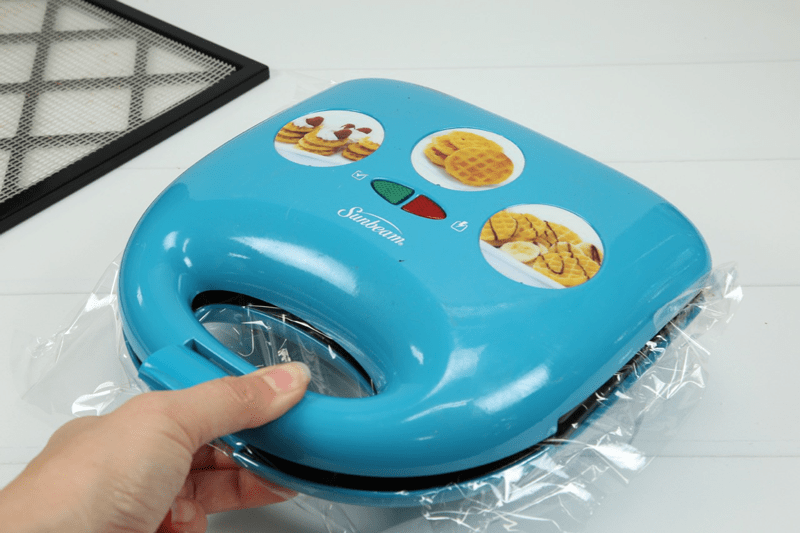
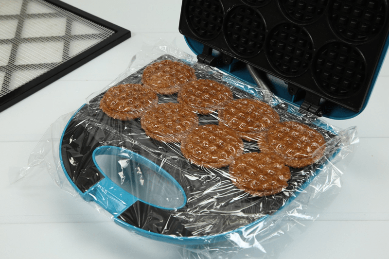
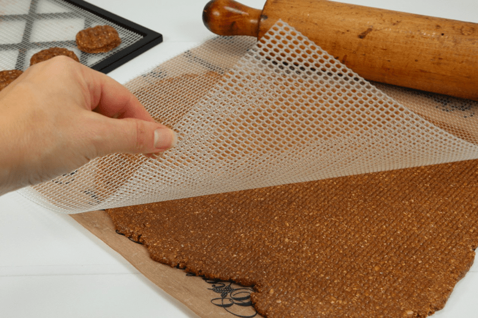
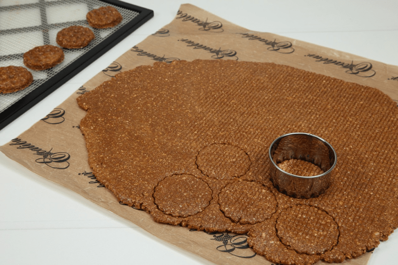
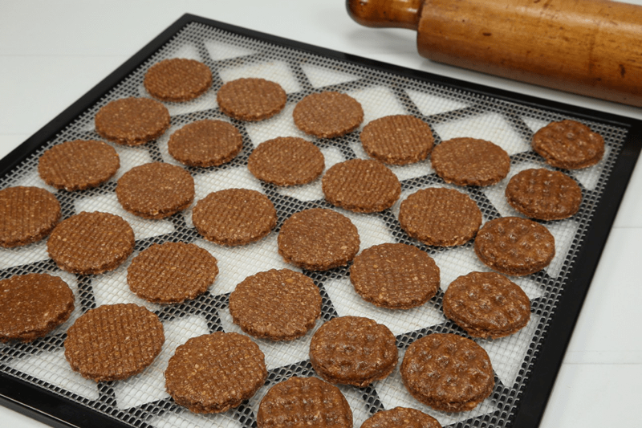

Ginger Pumpkin Spice Waffle Sandwich Cookies
– RAW / GLUTEN-FREE / DAIRY-FREE –
This cookie is so much fun to make. Though, it’s good to keep in mind that it doesn’t take much to excite me. All I need is a mini-waffle machine, cookie dough, and a piping bag! A few weeks ago, I made some full-sized raw waffles which I just loved. Of course, this sparked my interest in checking out other waffle makers. And what did I find? Mini Waffles! Right there on Amazon… just one click away and it could be mine.

If you don’t like to shop online, I recommend checking out your local used stores for different waffle machines. I usually don’t purchase used electric items but in this case, if the cord is missing… who cares if the machine doesn’t work? Who cares if the power goes out? We’re making raw cookies here!
Now, you don’t have to have this waffle machine in order to make these sandwich cookies. You can roll the dough out and press the mesh sheet that comes with your dehydrator on top of the dough to create a waffle-like impression. See photos below. For the piping process,
I have used several different types of piping bags. I have used my Fat Daddios piping bag, which is made out of silicone. I love it, and I am no stranger to piping bags. Over the years, I have owned many different ones, and I love this one the most. It is strong, it stretches, it is easy to handle and best of all… it washes up very easily! If you don’t have a piping bag, I recommend this small investment. I have used disposable piping bags, and I have even used a Zip-lock bag where I snipped off the bottom corner and piped away.
Ok, so enough about all that. The real question that you’re wanting to ask it is, what is the texture and flavor like?! First and foremost, it is scrumptious! The cookie is firm and chewy, not hard and crunchy. If using the mini-waffle machine, the imprinted pattern on both sides of the cookie has a great look and texture. The little divots create small pockets that lock onto the Maple Pumpkin Butter Spread and makes it the perfect sandwich cookie! The flavor is surely that of a true ginger cookie, spicy and sweet but not over-powering. The butter spread in the center is devilishly good. Did you grow up eating Oreo cookies? Where you pull the chocolate cookies apart and expose the sugary cream in the center? Same concept here but oh so much better! Pull those cookies apart and lick the butter spread right off, then dip the cookies in nut milk.
How to Successfully Eat a Sandwich Cookie
Step 1 – Dip your Ginger Pumpkin Spice Waffle Sandwich Cookie in ice-cold nut milk.
This will soften the outside of the cookie so that when you bite off a piece, the whole thing will melt in your mouth. New to dunking cookies? No fear, I will support you 100% throughout the process. If you have patience and wish to separate your sandwiched cookie, skip the following steps, and move on to Part 2. There is a technique for everyone!
- Once you have made the cookies, place them on the table. Grab a glass from the cupboard and fill the glass with nut milk to about half an inch from the top. This is the optimal height for dunking cookies.
- Lower the cookie gently into the milk until about half of the cookie is submerged. If you submerge the whole cookie at once, air will become trapped inside the cookie and will not allow the milk to soak in. There is a science to this!
- Be patient! Do not swirl or move the cookie around in the milk. You could risk breaking the cookie and losing it forever in the depths of your glass of milk. After exactly 9 1/2 seconds have elapsed, slowly remove the cookie from the milk.
- Once the cookie has been removed from the milk, gingerly (pun intended) raise the cookie to your mouth, wait for it… Place the cookie on your tongue, allow your teeth to slowly sink in, close your eyes and moan… Bite, chew, and enjoy!!
Step 2 – Twist it gently to open it and hold the two pieces in your hands.
- Make sure you have a glass of cold nut milk next to you for more pleasure in eating.
- Lick the creamy insides with your tongue, one side at a time. Savor it as you eat, experience all the textures.
- Lick or rake the remaining creamy filling off with your teeth, allowing it to dissolve in your mouth. This will fill your mouth with a sweet, pleasant sensation. Let the “warmth” of spices warm the cockles of your heart.
Step 3 – Dip your cookie in ice cream.
- Use them to scoop up ice cream, while they are still closed or open (your choice) until you have finished it entirely.
- Put some ice cream on the cookie and bite in it. Let the flavors and textures melt on your tongue. Eat until finished.
- As an alternative, you can open the cookie, then eat the inside and replace it with ice cream.
Step 4 – Smash the cookie into crumbles.
- Add them as a crumbly topping for your ice cream, making it… Raw Pecan Cranberry Pumpkin Ice Cream! With Ginger Pumpkin Spice Waffle Sandwich Cookie Crumbles! How is that for a mouthful?! Literally!
- Add the crumbles to a bowl of milk and have Ginger Pumpkin Spice Waffle Sandwich Cookie Cereal.
Small print…
There is never really one way or right way to eat a Ginger Pumpkin Spice Waffle Sandwich Cookie. It is not recommended to swallow the cookie whole, as you may choke on it. Chew, then swallow. As with everything, always read the small print. haha
 Ingredients:
Ingredients:
Yields: 44 (1 Tbsp) = 22 sandwich-sized cookies
Dry Ingredients:
- 1 cup (90 g) raw almond flour
- 2 cups (190 g) rolled, gluten-free oats, ground
- 1 tsp (7 g) Himalayan pink salt
- 1 tsp (3 g) ground cloves
- 2 Tbsp (15 g) pumpkin spice
- 1 tsp (3 g) ground ginger
Wet Ingredients:
- 1 cup (240 g) almond butter, softened
- 1/2 cup (146 g) maple syrup
- 2 Tbsp (40 g) raw honey
- 1 Tbsp (12 g ) vanilla extract
Filling:
Preparation:
- Process the oats in the food processor with the “S” blade until it becomes a fine powder.
- Add the almonds, salt, cloves, pumpkin spice, and ginger. Pulse a few times to mix.
- Add the almond butter, maple syrup, honey, and vanilla and process until the dough rolls into a ball in the machine.
- Omit and replace the honey with more maple syrup if vegan.
- Using 1/2 almond butter and 1/2 peanut butter is AMAZING!
- Place plastic wrap over the waffle pan form.
- Using the 1 Tbsp cookie scoop, create cookie balls in the palm of your hand and press them in the waffle form.
- Cover with a second piece of plastic wrap and press the lid down, leaving the waffle imprint.
- Gently lift out and trim the excess off from around the edges and place on the mesh screen from the dehydrator.
- Dehydrate at 145 degrees (F) for 1 hour, decrease to 115 degrees (F) continue drying for 6-10 hours.
- This all depends on how dry you want your cookie to be.
- Allow them to cool to room temperature before piping the filling on them.
- Fill the piping bag with the Maple Pumpkin Butter Spread, place a dollop in the center of one cookie, press a second cookie on top. Use just enough pressure so the spread creates an even layer with the cookies.
- One time when I made this recipe, I made the filling a day in advance. I kept it in the fridge to keep it fresh. When I was ready to pipe the cookies, I removed the piping bag from the fridge to let it warm to room temperature for a bit.
- Store in an airtight container once they have cooled. These should keep for three-five days in the fridge but can be frozen for a month.

Line the waffle machine with plastic wrap, place a dough ball in the center of each waffle form, and cover with another piece of plastic wrap (do not turn the unit on…this is a raw recipe).

Press the top down firmly…

Remove the waffle cookies and trim the edges so that they are nice and round. Place on dehydrator tray.

Don’t own a waffle cookie machine?! No worries. Roll the cookie dough out to roughly 1/4″ thick. Lay the mesh sheet that comes with the dehydrator on top of the dough and run the rolling pin over it so it leaves an impression on the cookie dough.

Use a cookie cutter to create the round cookie shapes.

Here you can see the two different versions. Now slide into the dehydrator to “cook.”
© AmieSue.com